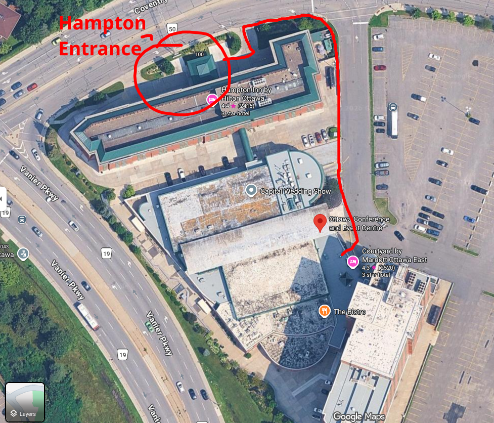

CanFURence 2026 Reviewed
| 2747 words
| #Events | #Reviews | #Personal
Just a few weeks ago, I had the privilege of visiting my home con again this year, and I have to say that it might be my favourite convention I've attended thus far. With the memories still fresh in my mind, I figured now is a better time than ever to write about my experiences and have a record of what made this convention so special for me.
Background
CanFURence is an annual furry convention held in Canada's capital city of Ottawa. The convention's first iteration happened just 10 years ago in 2016, and was the first furry-specific convention in the city since C-ACE concluded in 2007, and the failure that was Bytown Furry Convention's 2011 launch. Since it's inception, CanFURence has managed to make a name for itself within the Canadian furry scene, and has experienced enough growth to continue hosting events every year.
2026 marks CanFURence's ninth event, and was held at the Ottawa Convention and Event Centre (OCEC) this year. Due to scheduling issues on the part of the convention's usual venue, the Delta Hotels in downtown Ottawa were unable to host CanFURence this year, and the event risked being cancelled for the year if they were unable to find another location. Luckily, they were able to strike a deal with the OCEC a couple months after the initial announcement, and CanFURence 9 was held on August 7th to 9th.
Venue
The Ottawa Convention and Event Centre is located within the neighbourhood of Vanier, and hosts two hotels attached to the convention space; the larger Courtyard by Marriott, and the smaller Hampton Inn by Hilton. I personally stayed at the Hampton Inn, which was attached to the convention centre through a sky bridge accessible from the second floor.
To start off with the venue's drawbacks, the OCEC isn't in the most optimal area of town to host a convention of this nature, with there being next to no food options in walking distance. If you or someone you know is able to drive then it doesn't take too long to drive over to the Trainyards plaza or St. Laurent mall and find some fast food there. But otherwise, sit-down restaurants were far and few in between in this area of the city, and something that you'd need to venture farther out for. Of course, sometimes the fun part of conventions is getting to explore the place it's being held in, but a good amount of people who came into Ottawa from out of town wouldn't have had the means to transport themselves around town.
Thankfully, the con staff knew this well, and brought in two food trucks to provide food for con attendees for the weekend-- something that would benefit the food trucks greatly, as the Beavertails truck has to refill their stock 24 times on Saturday alone, and Angry Dragonz had to close their restaurant to fully staff the food truck for the entire weekend.
Another thing I want to point out isn't the fault of the convention whatsoever, but whoever built the OCEC made some very strange architectural design choices. For instance, why is an elevator the only way I can get to and from the other floors of the Hampton Inn because the stairs are fire exits only, making everyone rely on the elevators? And why are there stairs going to the sky bridge from the Hampton Inn but no elevator or ramp? With the latter, this means that one of the only ways to get from the Hampton to the con space and vice versa with a mobility aid is to go from the Hampton Inn's entrance (which faces towards Coventry road,) travel around the hotel, and pass the entrance and exit for underground parking before reaching the entrance of the convention centre. I have very crudely drawn the route that one is required to take if they use a mobility aid to get between the hotel and con space below.

Granted, there is also an accessible entrance to the first floor on the back side of the Hampton Inn, but this requires a room key card in order to use, so it cannot be used by anyone who doesn't actually stay at the hotel. This area was also barred with fences by nighttime, which would've made getting through with a mobility aid tedious.
As for the positives, I think most would say that the OCEC is an improvement over the Delta Hotel, simply based on the amount of room that the former has compared to the latter. With there being two hotels built in between a separate convention space, this meant that convention activities were hosted away from both hotels, giving ample room for people to spread out farther than the Delta was able to accommodate. Not only was there more space inside the con space, but there was also much more room outside for people to hang out, which is a plus for me since I enjoy smoking weed during conventions and like having the space outside to do so.
This isn't something that's relevant to me personally as I don't drive, but with the bigger venue also came much better parking options! Compared to the mess that is trying to find parking in downtown Ottawa, the OCEC has a leg up on the Delta with their on-site parking that also included an underground garage. Parking was also complementary for those staying at either of the hotels, which is always a plus.
Despite it's odd placement in the city, the OCEC also has the benefit of being so close to both the Ottawa train station for those coming from out of town. It's also just a 10 minute drive away from Parliament Hill, as well as some museums and malls for those wanting to do some sight-seeing in the area. Again, you'll likely need to take a taxi or have someone in your group who can drive if you don't drive yourself, but it's not like it's completely disconnected from the rest of the city.
Convention Events
To be honest, conventions are less about the events for me, and more about having an excuse to meet up and hang out with friends, both from within and out of town. That being said, I still try to enjoy at least a few convention-related activities, and that rings true for this convention as well.
One of the events I did manage to attend was the Inflatables Meet and Squeak, which I way preferred over last year's inflatables panel. Given that it was hosted in the main event area, there was ample room to spread the toys out, unlike last year's panel that had everything crammed into one of the Delta's penthouse rooms. This time, however, there was more than enough room for the inflatables, and I feel I got to enjoy them a little more this year than I did last time as a result. I also prefer the interaction system they had this time around, where each toy was "tagged" with a specific colour that signalled to attendees which ones were safe to interact with, which ones you needed to ask the owner of the toy before interacting, and which ones were off-limits.
The other event I managed to make it to was the trading post panel, since my friends had things they wanted to trade. I didn't have a ton of stuff to trade myself, just some stickers I got printed to give away at the convention, but I still managed to enjoy myself with the people I talked to and items I got (mostly other peoples' stickers, but I can't ever complain about adding to my sticker collection.) I liked the way the panel was set up, with it taking up a ballroom with many round tables set up to allow everyone to lay down their stuff, and enough space for everyone to mingle with each other.
In terms of the events I didn't participate in, I think the parade was poorly thought out this year because they had everyone walk around convention space in a circle, wrapping around the outside of the OCEC and through the middle of the main convention space inside. Because of where the parade's route was, I ended up getting trapped in the hallway between the con centre and the Courtyard lobby, and wasn't the only one who was stuck there for a good 10 minutes as the fursuiters went by. I understand that the location of the OCEC isn't optimal for a parade that goes beyond the premise of the convention centre, but I feel like a fursuit parade might've not been the best idea this year.
Dealer's Den
I honestly don't have a lot to say about dealer's this year, because I felt there wasn't a ton of variety in the types of items sold this year. I did buy a handful of things and considered a few other items, but many things didn't appeal to me this time around. I also found there was a lot of fan works being sold, which isn't necessarily a bad thing, but I do wish there were more vendors who sold original works to balance things out. Maybe I'm just biased because I tend to pinch pennies whenever I'm at a convention so I tend to not buy much from dealer's anyway, but all in all, not much caught my eye this year.
Feedback and Suggestions
With the venue of CF 10 still being up in the air, we don't know if they'll return to the Delta, or if they'll be back at the OCEC. Between both locations, the OCEC makes for a better venue, but I do think some improvements could make it's flaws more manageable.
For instance, I think there needs to be an alternative event to the fursuit parade, because it became very inconvenient for anyone not participating to get anywhere in the con space. It might need to be tweaked to fit the constraints of the OCEC, but I think something like BLFC's Fursuit Festival could be more appropriate for the venue location and layout. This would still allow the opportunity to showcase suiters and for fursuit interactions with both other suiters and non-suiters to happen without people getting trapped from the fursuit parade going in circles.
The lack of nearby food options was also rather problematic, but the convention staff made the best of it by bringing in the food trucks-- an idea that was obviously very beneficial for the participating businesses, and I have to wonder if they've now established a working relationship with CanFURence staff. If the convention returns to the OCEC, I think bringing in a few more food trucks would be a good idea, if at all possible that is. Beavertails are great, but they aren't really a meal as much as they're a dessert or snack.
On the flip side, I think the Delta just doesn't have enough space to host the convention anymore. With the event consistently bringing in over 1,500 attendees every year, the Delta Hotel tends to feel crowded and congested, which isn't ideal for a furry convention in my opinion. Sure, there's way more food options near the Delta, but as someone who doesn't take well to dense crowds, I way prefer being at conventions that have space to move around and interact with other people.
Even with it's strange architectural flaws and inadequate location, I feel the amount of space that the OCEC provides and the hard work of the CanFURence staff to accommodate for the lack of nearby amenities makes it the better option compared to the Delta.
Other Tidbits
Here's a few other things I've written down about my experiences with CanFURence 9 that didn't really fit elsewhere.
Firstly, I have to complain a little bit about how ridiculous it was trying to check-in at the Hampton Inn on the Friday. Perhaps I should've booked for 3 nights instead of 2, starting on the Thursday, but I didn't anticipate not being able to get into my room until 45 minutes after my check-in time. Keep in mind that I had booked an accessible room as well due to my health needs-- I have to wonder what would've happened if I had some kind of medical episode while I was waiting to check in, and needed to have access to my room as soon as possible. This is no fault on the convention itself and lies solely on the Hampton's upper management for failing to compensate for the five employees who called out sick that day, which lead to these late check-in times as things fell behind. I don't even fault the staff who were there that day because they really were trying their best and kept me updated on the situation all throughout. But it still threw a wrench in my plans, and I can only hope that this will improve in the future.
I also had the opportunity to be at the convention's largest room party, which was honestly a pretty big step for me as someone who's chronically socially anxious and overwhelmed! I did end up having to leave about an hour and a half after being there, but it was great being able to talk to the people I did meet there regardless. Although, I did look at the layer of condensation that built up on the windows from how many people were packed in the room, and knew in that moment that this would be a super spreader event. And who would've guessed that I was right, as many people ended up falling ill after this convention, myself included.
I ended up spending the following week feeling very ill, and while I felt relief after the 24 hours since my symptoms started, it still knocked me off my feet, and I'm still working to recover from it. I don't know if it was COVID as I started experiencing symptoms on the Sunday evening, and there weren't any reports of positive COVID tests from the convention until about a week after so I didn't even think of taking a test myself. But I urge everyone who attended CanFURence this year to stock up on vitamins and get plenty of fluids and rest-- con crud can be nasty and you never know what viruses are mixed in with it. I think next time, I'm going to take vitamins before and during the convention to better protect myself, and maybe even get some booster shots, and I encourage everyone else to do the same.
Conclusion
Even with the problems I encountered with my check-in time and getting sick right after, I still consider CanFURence 9 to be my current favourite convention I attended, even if I didn't participate a ton in the actual con activities. I made many wonderful memories and met amazing people at the convention, which I think is what matters the most.
CanFURence 9 concluded with 1,733 attendees having registered for the event, 878 fursuiters having been present, and $22,000.00 raised for charity. The prep work begins for their 10th event, and while we don't know when or where it'll take place, we know that the theme for next year will be Pawdyssey. I look forward to where the convention takes us next year, and I hope that CanFURence can continue to host events for many years to come.